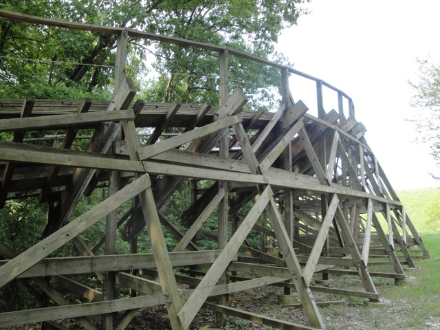
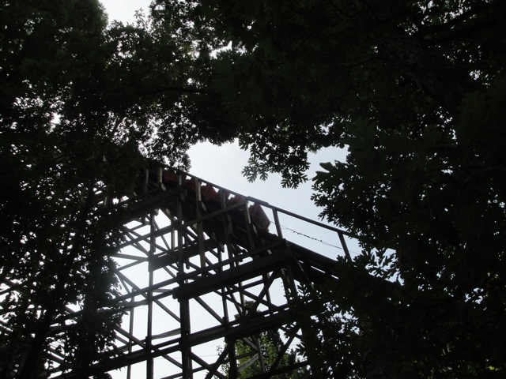
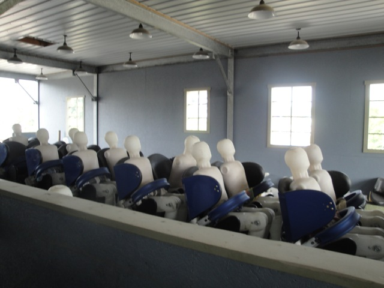
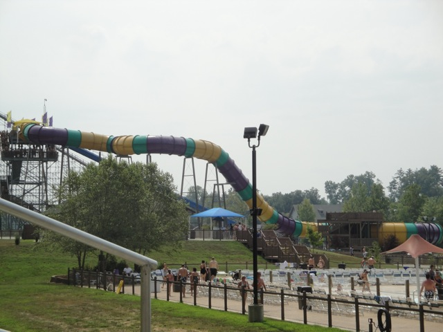
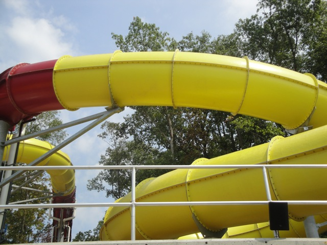
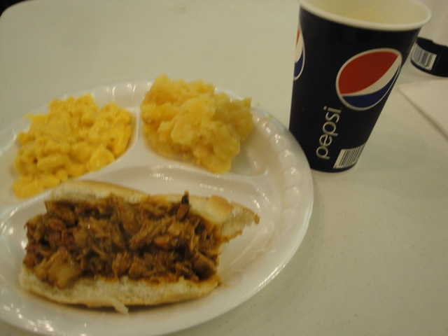
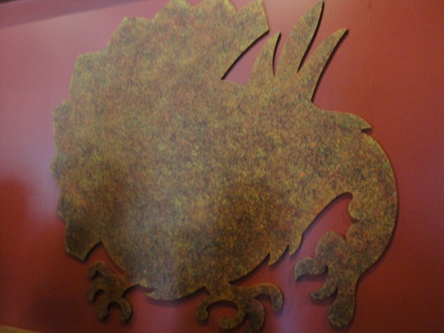
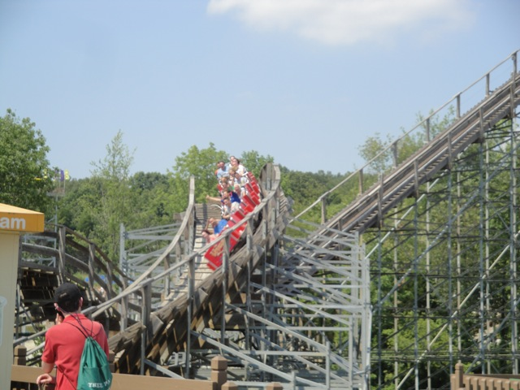
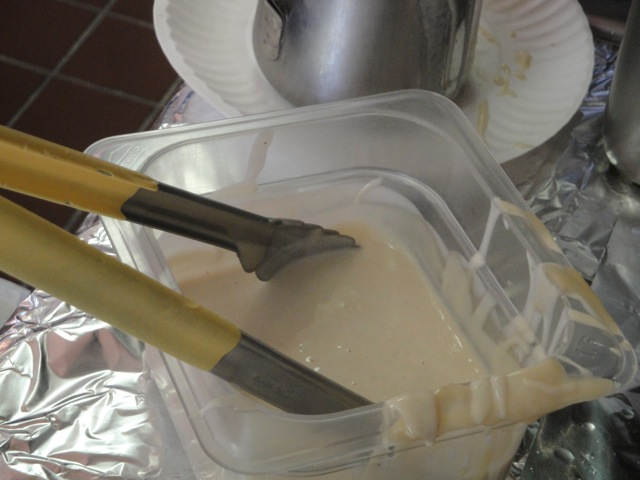
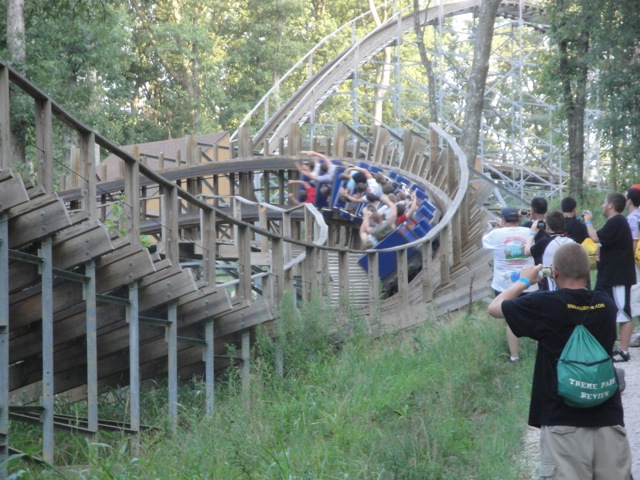

TPR's Middle America Tour
Nickelodeon Universe
Adventureland
Worlds of Fun
Silver Dollar City
City Museum
Six Flags St. Louis
Holiday World
Indiana Beach Six Flags Great America Mt. Olympus Timber Falls Valleyfair
Sweet. This is a great view to wake up to.
This however, is not a great hotel to stay at. Definetly not recommended by Incrediblecoasters.
Yup. Today, we're at Holiday World.
Wow. We already got a backstage tour. Today is looking great so far.

We were able to get very close to the coasters today.

Raven through the trees.
"Ooh!!! We're touching the Raven!!! We're so cool!!!"
 Ok. Enough looking around. Let's ride.
Ok. Enough looking around. Let's ride.
 Unfortunetly, I kind of found Raven to be overrated at first. (It got better in the evening.)
Unfortunetly, I kind of found Raven to be overrated at first. (It got better in the evening.)
 Next up, the Legend.
Next up, the Legend.
While Raven and Voyage are better, I really found Legend to be a great woodie and it needs some more love.
 Speaking of the Voyage.
Speaking of the Voyage.
"Whoa Whoa Whoa!!! I like you as a friend and all, but that's it!!! Just a friend!!! Back Off!!!!"
 So you know how most people think of the Voyage. But what about us?
So you know how most people think of the Voyage. But what about us?
 Yeah. This ride kicks ass.
Yeah. This ride kicks ass.
 I can't decide which I like more. Voyage or Coaster @ PNE Playland.
I can't decide which I like more. Voyage or Coaster @ PNE Playland.

And here are the Timberliners which I am looking foreword to seeing on Voyage in 2011.
Ooh. Let's check out Splashin Safari.

Unfortunetly, I never really got a chance to check out Splashin Safari. But oh well. It just gives me another reason to come back to this awesome park.
Yikes. It's boiling out here. How much are drinks here?
 At Holiday World, your soft drink is FREEEEEEEEEEEEEEEEEE!!!!!!!!!!!!! That is awesome. For once, I felt fully hydrated at a theme park. Thanks, you guys are awesome.
At Holiday World, your soft drink is FREEEEEEEEEEEEEEEEEE!!!!!!!!!!!!! That is awesome. For once, I felt fully hydrated at a theme park. Thanks, you guys are awesome.
 Well, I at least managed to get on Wildebeest. So how was it?
Well, I at least managed to get on Wildebeest. So how was it?

Wildebeest was freaking amazing. It even replace Bombay Blasters as my new #1 Water Slide!!! Sorry Wild Rivers, but this day was gonna come sooner or later.
And it wouldn't have been possible to experience this awesome water slide without this awesome front of the line pass. Once again, thank you Holiday World. You guys are awesome.
 That may be it for Splashin Safari, but that certainly won't be it for getting wet.
That may be it for Splashin Safari, but that certainly won't be it for getting wet.
Pilgrims Plunge is a very interesting water ride.
Pilgrims Plunge is a giant shoot the chutes with an elevator lift and apparently, you don't get wet on it.
So far, it looks like the rumors may be true.
Nope. You do get wet. As expected from a giant shoot the chutes.
All right. Time to check out a more patriotic part of Holiday World.
S&S Double Shots may be small, but man do they pack a punch.
All right lets just get this over with.
Credit Whores.
"Hey kids, now that you conquered Howler, you ready to go up against the Voyage?"

In case you didn't know, this was lunch. We ate this.
Hey Holidog, what's up!! You wanna join the Incrediblecoasters Team?
Those are the ugliest bunnies I've ever seen in my life. And I know what ugly is.
Gobbler Getaway is Holiday World's Dark Ride. And it's a very interesting dark ride.
 "You're not shooting the turkeys. You're actually calling them. But don't tell PETA that."
"You're not shooting the turkeys. You're actually calling them. But don't tell PETA that."

Is that turkey doing what I think it's doing?
 So that's what we were calling the turkeys for. We needed them to run the Tilt a Whirl for us.
So that's what we were calling the turkeys for. We needed them to run the Tilt a Whirl for us.
 Anyone up for another ride on Pilgrim's Plunge?
Anyone up for another ride on Pilgrim's Plunge?
 Yeah. That whole "You don't get wet" statement is total bullsh*t.
Yeah. That whole "You don't get wet" statement is total bullsh*t.
I can't wait till we drag Samantha on this thing later today.
Oh boy. I finally got a job working at Holiday World.
Nope. This is just the begenning of our amazing Backstage Tour.
 Hello. I'm Samantha. Long time park employee, Tour Guide for your tour, and until the end of this tour, Pilgrims Plunge Virgin.
Hello. I'm Samantha. Long time park employee, Tour Guide for your tour, and until the end of this tour, Pilgrims Plunge Virgin.
Anyways, on with the tour.
Yes. Congratulations. From all at Incrediblecoasters.
First up, a park history lesson via puzzles.
In the 60s and 70s, we were known as Santa Claus Land and only had small flat rides.
In the 80s and 90s, They became Holiday World and added roller coasters.
And I'm not sure what this is since the Puzzle Man failed to finish this puzzle.
"Wow. I had no idea the Voyage Station was so big."
Ok. Who wrote that? We all know that a Holiday World employee wouldn't write Bad Butt on the whiteboard.
 Ok, time for a quick ride on the Voyage.
Ok, time for a quick ride on the Voyage.
Random Voyage Car sitting randomly on a random peice of random ground randomly.

Yeah. This ride is awesome.
During the backstage tour, I was summoned to a Funnel Cake Challenge to see who can make a better funnel cake.

Dammit!! I dropped my wallet in the batter. Better go fish it out.
It's no coincidence that I was summoned to partake in this funnel cake challenge. For this is just training for my appearence on Iron Chef.
So far, so good.
"Oh my god. Did I just create that?"
When I open up Incrediblecoastersland, all the funnel cakes served will look like this.
 Ha! You're going down Kevin!!
Ha! You're going down Kevin!!
Now this is how you make a funnel cake.
Oh crap. That's a good looking funnel cake. Maybe if I put powdered sugar on mine, they won't notice the properness of Samantha's funnel cake.
 Yeah, I lost. Holiday World 1. Incrediblecoasters 0.
Yeah, I lost. Holiday World 1. Incrediblecoasters 0.
Now back to our scheduled backstage tour.
Hmm. What are the bottled drinks for when there's already free soda outside?
 I guess to just go with this corn. =/
I guess to just go with this corn. =/
Next up, the sign room.
That's a good looking picture. They should build a mural to put that photo in like they have at SFMM. (And they need to update that BTW.)
 Hello, I have great ideas for Holiday World. I'd share them with you, but I'm not for obvious reasons.
Hello, I have great ideas for Holiday World. I'd share them with you, but I'm not for obvious reasons.
 And now, time for a Voyage Photo Walkback.
And now, time for a Voyage Photo Walkback.
 I'm still not sure what's better. Voyage or Coaster.
I'm still not sure what's better. Voyage or Coaster.
 On one hand, These airtime hills are like Goliath's helix compared to the insanity of Coaster's airtime.
On one hand, These airtime hills are like Goliath's helix compared to the insanity of Coaster's airtime.
 But Voyage feels a little crazier and lasts longer. It's close, but I'm still gonna go with Coaster as my #1 Woodie.
But Voyage feels a little crazier and lasts longer. It's close, but I'm still gonna go with Coaster as my #1 Woodie.

"Don't photograph me!!! I'm ashamed to have lost to a puny little wooden coaster in Canada!!!!"
 Time for one last ride on Raven when it's running awesomely.
Time for one last ride on Raven when it's running awesomely.
 And one the bus to the hotel, we partook in Elissa Bingo.
And one the bus to the hotel, we partook in Elissa Bingo.
Indiana Beach
Home